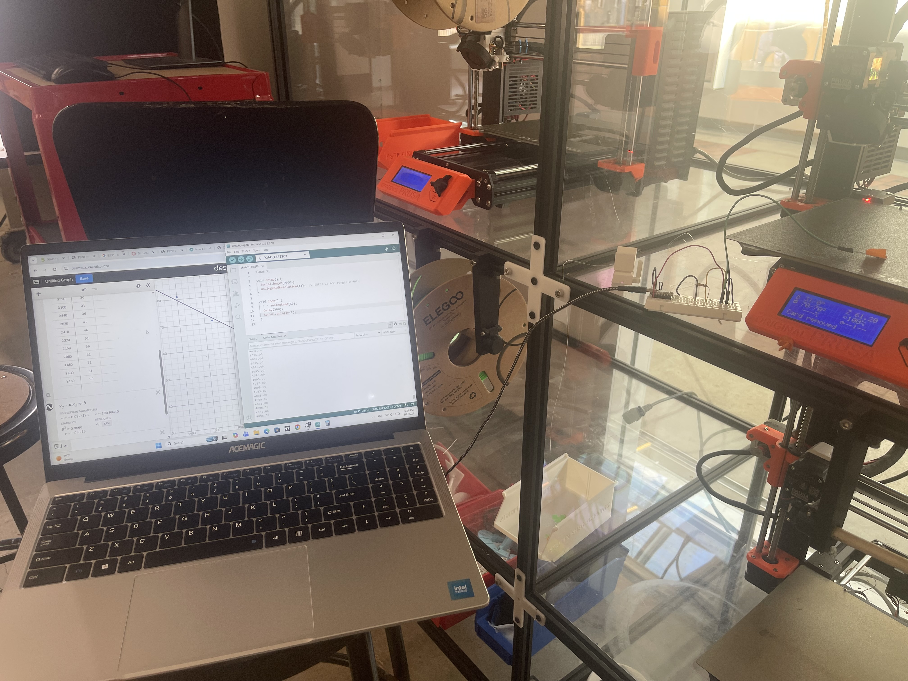
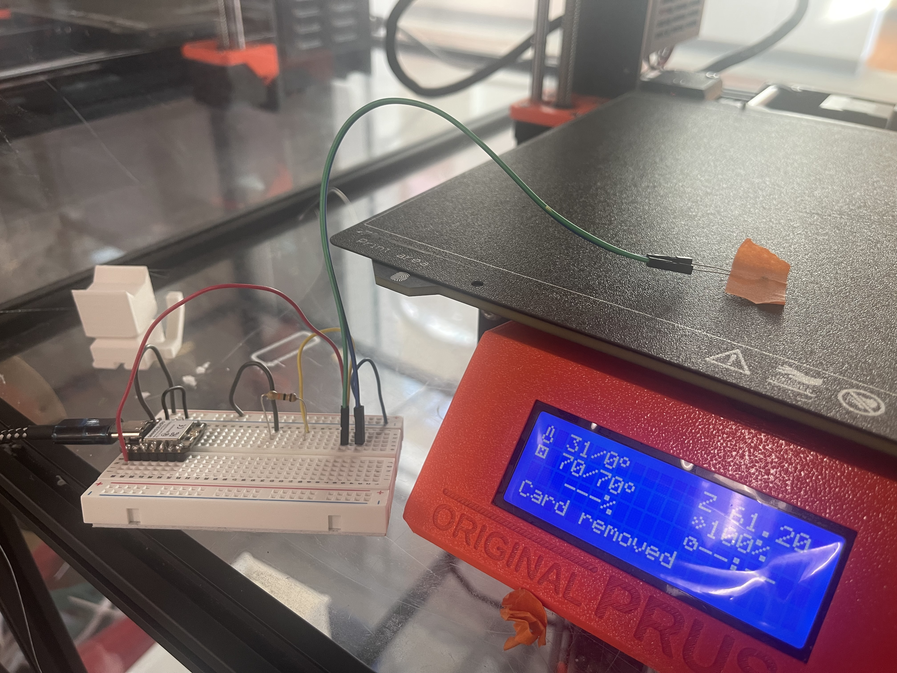
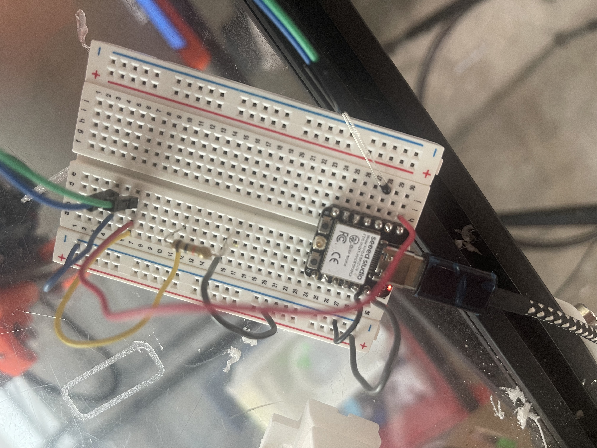

Week 6: Inputs
You have two assignments: create and calibrate a capacitive sensor and then use and calibrate another sensor.
Capacitive Sensor
This part of the assigment I deed woth Wut: her is a link to his page: https://wwm03.github.io/PHYS-S12/06_inputs/index.html
For our capacitive sensor, we (Wut and me) put a copper paper around a water bottle to measure the tilt of the water bottle. As the water bottle tilts, the water level will always be balanced, so the more we tilt, the more water will be touching the copper, making the analogue read output be higher. We drew our own angle and then aligned the line of that specific angle into a ruler to have an exact angle. We took the measurements and plotted them into a graph.
This is before we calibrated

This is after we calibrated: when we added other components. For example, a light sensor that detected when there was a flash, ambient, or dark light. We added that into the capacitor so after 90 degrees (depends on the point of view), the red LED light will be activated because of the correlation of the tilt with the light sensor.


The video is not runnig for me, it has 796,000 lines of code, but in Wut page is running the same video.
Another Sensor
OutPut Sensor
I used the MK3 plate to conduct this experiment and plotted all the data collected into a Desmos graph. I started at 26 Celsius since it is room temperature and went up to 90 Celsius. After 90 Celsius, the tape came off and all the measurements became inconsistent.
In between 26 and 90, I plotted 11 dots. The x-axis was the raw data, and the y-axis was the actual temperature of the 3D printer plate. After plotting all the numbers, I wrote y2 = mx2 + b, giving me a new calibrated model that I could use.
It worked, and it was accurate if it had the exact same conditions as before the tape came off. But other than that, it was off by 10 Celsius. If I added 10 Celsius by hand, it worked.




